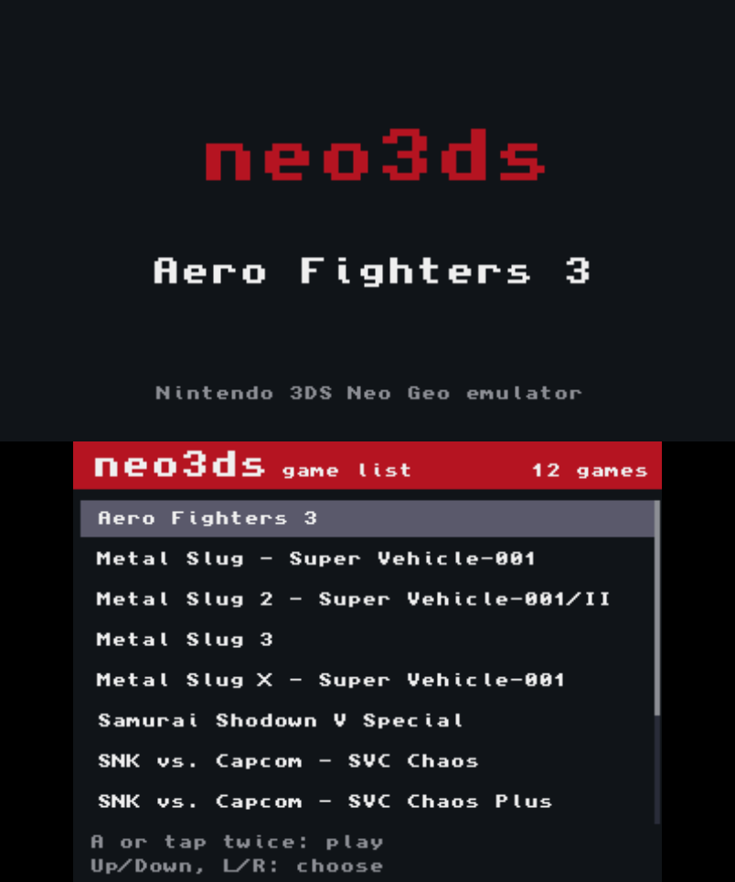

PC의 롬 zip → 3DS 설치 파일(CIA) · 변환기 + 에뮬레이터 엔진
네오지오 게임을
3DS 홈 메뉴에.
직접 가진 게임의 롬 파일(MAME 롬셋 zip)을 변환기에 넣으면 3DS 설치 파일(CIA)이 나옵니다. 설치하면 HOME 메뉴에 자기 아이콘으로 뜨고, 구형 3DS에서도 60fps로 돕니다.
242 / 282롬셋 변환 가능 25실기 확인 60fps구형 3DS브라우저에서 동작 · 설치 불필요 · GPL-2.0

설치 3단계
설치 파일을 만드는 건 PC에서 1~2분입니다. 그 뒤로는 3DS만 있으면 됩니다.
-
1
롬 준비
직접 가진 게임의 MAME 롬셋과 바이오스를 한 폴더에 둡니다. zip 이름은 그대로 두세요.
-
2
CIA 만들기 (또는 런처용 파일)
게임 하나에 1~2분. 대부분은 그래픽 압축 시간입니다. zip 여러 개를 한 번에 넣으면 차례로 변환되고, 런처용 파일(.neo3ds)로도 만들 수 있습니다.
-
3
3DS에 설치 (또는 런처에 복사)
CIA는 설치하면 HOME 메뉴에 게임 아이콘이 생깁니다. 런처용 파일은 SD 카드 /neo3ds/games/에 복사하고 런처 앱에서 고릅니다.
게임 CIA
게임마다 설치 파일 하나. HOME 메뉴에 게임별 아이콘이 생깁니다.
- HOME 아이콘·배너가 게임별로
- 키 설정·세이브·퀵세이브가 게임별로
- 하고 싶은 게임만 골라 설치
추천 · 여러 게임이면 이 방식
런처: 앱 하나로 전 게임
게임마다 CIA를 설치하는 대신, 런처 앱 하나만 설치하고 SD 카드의 게임 파일 목록에서 골라 실행합니다. HOME 메뉴 아이콘도 하나만 생깁니다.

- 설치는 한 번런처 CIA는 FBI로 한 번만 설치. 이후 게임 추가는 .neo3ds 파일을 /neo3ds/games/에 복사만 하면 됩니다.
- 저장 공유같은 게임이라면 CIA판과 런처판이 키 설정·백업 RAM·퀵세이브를 함께 씁니다.
- 바로 복귀게임 중 아래 화면 Game list를 두 번 누르면 목록으로 돌아갑니다.
3DS 조작
준비물
- 3DS 구형 3DS / 2DS / New 3DS / New 2DS XL, 커스텀 펌웨어(Luma3DS)와 설치 도구(FBI) 필요
- 웹 브라우저 Chrome·Edge·Firefox·Safari · 롬은 브라우저 안에서만 처리
- 직접 가진 롬 MAME 롬셋 zip + neogeo.zip (저장소에는 없음)
- 소리 파일 SD 카드에
/3ds/dspfirm.cdc
MAME 롬셋 zip만 변환할 수 있습니다. MAME 규격(롬셋 이름·칩 CRC)과 다른 롬셋은 변환되지 않습니다.
게임 호환성
롬셋 282종을 인식하고 242종을 변환합니다. 그중 25종은 구형 3DS 실기에서 확인했습니다(소닉윙즈 3는 플레이 가능).
참고 사항
- 메모리가 빠듯한 롬셋은 변환기가 미리 경고합니다.
- 해독은 구현했지만 실기에서 돌려 보지 못한 방식도 있습니다.
- 메탈슬러그 2·X·3은 적과 폭발이 많은 장면에서 원래 아케이드 기판도 느려집니다. neo3ds도 그 구간에서는 똑같이 프레임이 떨어집니다.
- 롬이 없어서 확인하지 못한 게임은 다음과 같습니다 - CMC42: 전국전승 3, 줏파파, 스트라이커즈 1945 플러스, 프리히스토릭 아일 2, 나이트메어 인 더 다크, 간류, 뱅 비드 · CMC50: KOF2001 · PCM2: 메탈슬러그 4 플러스, 레이지 오브 드래곤즈, 포치와 냐
- KOF '98 MVS판은 보호 칩 때문에 변환되지 않습니다. 가정용판(kof98h)이 zip에 있으면 자동으로 그쪽으로 변환됩니다.
자주 묻는 질문
롬은 어디서 받나요?
받는 곳이 없습니다. 직접 가진 게임의 롬셋이 필요하고, 만든 CIA에는 롬 데이터가 들어 있으니 배포하면 안 됩니다.
구형 3DS에서도 60fps인가요?
KOF '95~'99·2000·2002, 메탈슬러그 1·X·3·5, 네오 터프 마스터즈, 네오 드리프트 아웃, SVC Chaos, 사무라이 쇼다운 5 스페셜은 실기에서 풀 스피드입니다. 메탈슬러그 2·X·3은 원래 기판에서 느려지던 장면은 똑같이 느려지며, 소닉윙즈 3는 플레이 가능합니다.
실측 한 프레임 16.7ms · 59.8fps · KOF '98 64.0 → 20.3MB · 기술 문서
소리가 안 나요.
SD 카드에 /3ds/dspfirm.cdc가 필요합니다. DSP1 같은 도구로 한 번 만들어 두면 됩니다.
New 3DS에서는요?
804MHz와 L2 캐시를 켜도록 설정해 두어 훨씬 여유롭습니다(실기 미확인).
상업적으로 써도 되나요?
안 됩니다. 포함된 CPU 코어(Cyclone 68000, DrZ80)가 비상업적 사용만 허락합니다.
법적 고지
롬·바이오스·게임 데이터는 저장소와 배포 파일에 없습니다. 직접 가진 게임으로만 만들고, 만든 CIA는 배포하지 마세요.
neo3ds는 개인 팬 프로젝트이며 SNK·Nintendo와 관계가 없습니다. NEOGEO는 SNK CORPORATION, Nintendo 3DS는 Nintendo의 상표입니다. 크레딧과 외부 코드는 THIRD_PARTY_NOTICES.md, 소스는 GPL-2.0입니다.
문제 신고
의견이나 문제를 남겨 주세요. 계정 없이 익명으로 접수되고 공개 GitHub 이슈로 등록됩니다.